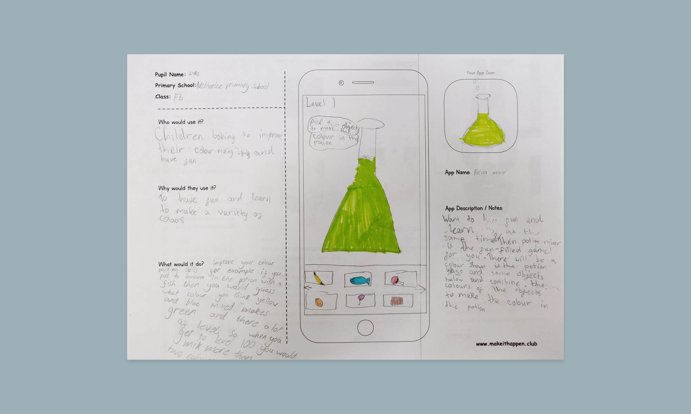
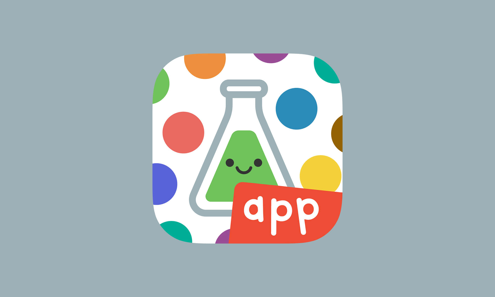
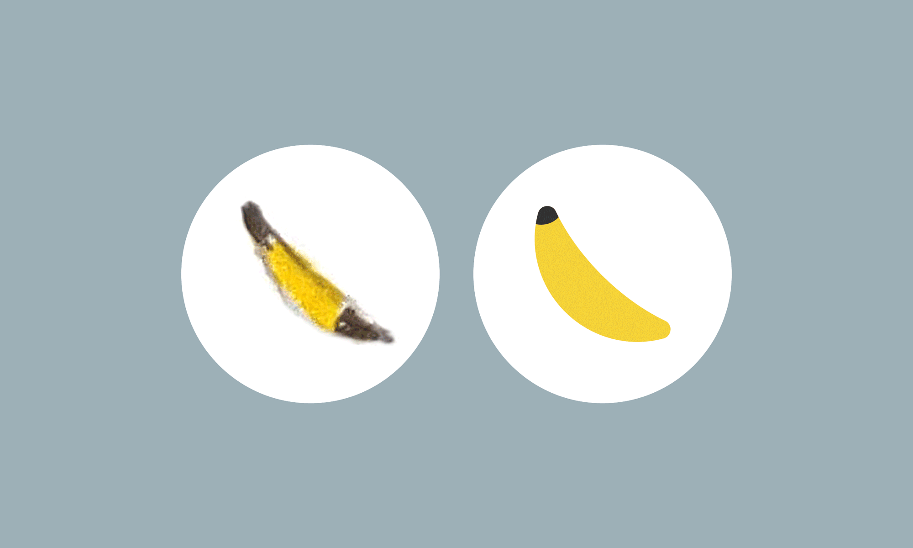
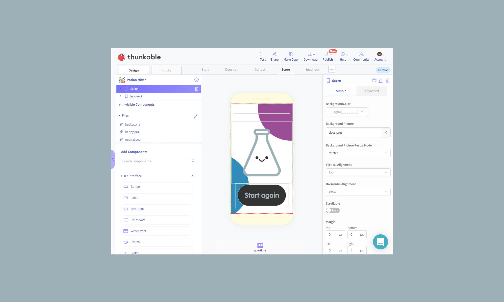
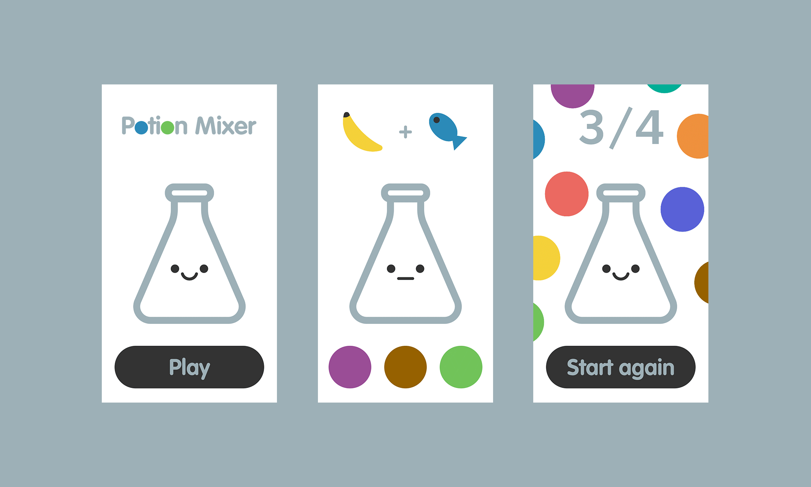

Make it Happen is a charity with the aim to inspire childrens digital learning. They run an innovative and exciting app design competition for Primary Schools across Scotland, and I have been fortunate enough to be given the opportunity of getting involved.
I've helped realise a number of different apps since I started volunteering to the programme. Apps to battle climate change, help with basic colour theory, educate kids on the Coronovirus, learn about space, measuring out ingredients for recipes, anything... and all designed by kids.

A couple of voluneers visit a school to chat about tech and engineering. They introduce a high level workflow of getting an idea into production, and set them the challenge of designing an app. The team take all the app ideas and shortlist them for prizes before choosing one to actually create.


The idea is quickly fleshed out, the journey flow is mapped, the UI designed, assets produced, and the app is then built in Thunkable and launched into the app stores for download. Using Thunkable means that once complete the kids can continue to evolve it on their own as it uses a block-based visual programming language designed for children and early coders.

Working in a role where projects can span several months or even years, being able to be part of something that requires rapid turn arounds and tight deliverables is great for maintaining energy levels and creative satisfaction.

If you're interested in finding out more about Make It Happen or what apps the team have helped produce on behalf of the schoolkids, you can find it all on the Make it Happen website.